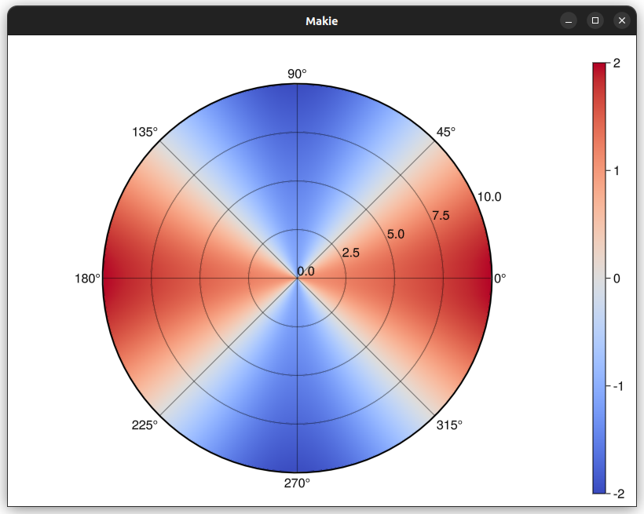
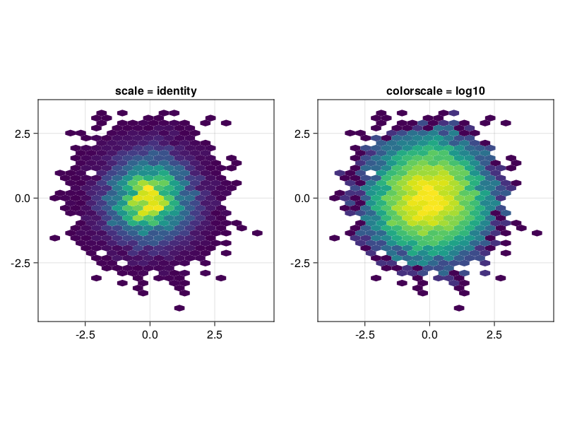
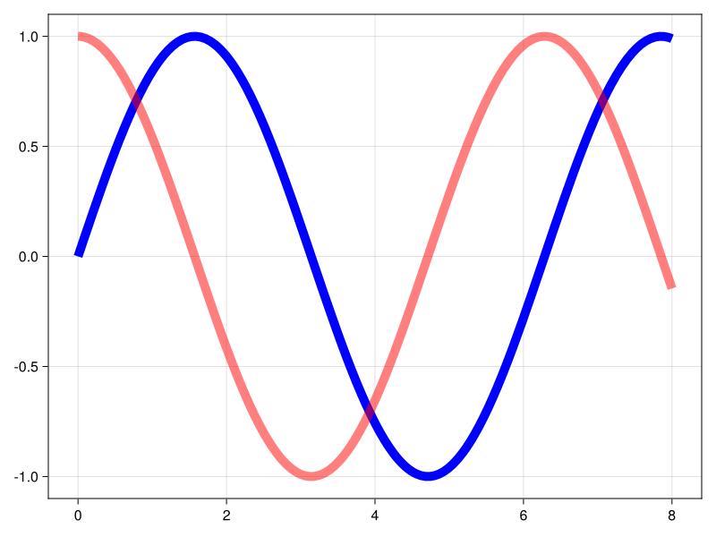
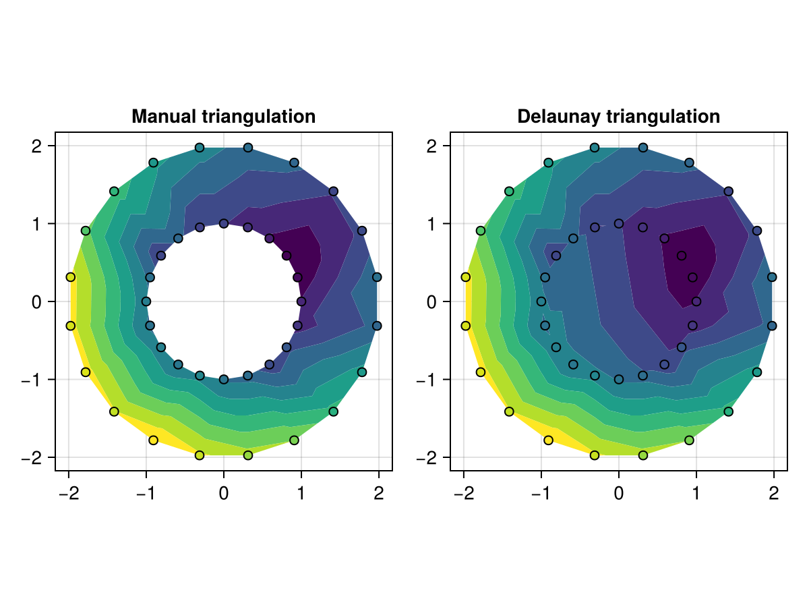

We have a new release for you which - even though it takes the form of an unassuming patch - comes which a bunch of long-awaited changes and additions.
Frederic put in a lot of work and finished an effort originally started by Anshul (#2014) and Julius. Now, Makie finally has its own polar axis. We consider this an experimental feature for now, which means that breaking changes to the implementation are more likely once users start testing it.

This work was a joint effort by t-bltg (#2900) and Simon. Now you can pass scaling functions via the colorscale parameter to plotting primitives that take numerical colors and colormaps. The numbers will then be pre-transformed before being looked up in the colormap, allowing you to quickly visualize exponential and other nonlinearly distributed data.

With the colorscale rework, Simon refactored the internal color handling which also resulted in the implementation of an alpha keyword for most primitive plot types. This alpha value simply acts as a multiplier for any colors passed or looked up in colormaps (as opposed to a layer-based compositing alpha).
f, _ = lines(0..8, sin, color = :blue, linewidth = 10)
lines!(0..8, cos, color = :red, alpha = 0.5, linewidth = 10)
f
tricontourfThis work by Daniel switched the internal handler of triangulation computations in Makie from jll-based MiniQHull to his own package DelaunayTriangulation.jl written completely in Julia. This allows users to exert much more control over the triangulations used for their tricontourf plots.

Here's a more comprehensive list of changes which can also be found at docs.makie.org/stable/news/.
We hope you enjoy the new release!
Allow arbitrary functions to color streamplot lines by passing a Function to color. This must accept Point of the appropriate dimension and return a Point, Vec, or other arraylike object #2002.
arrows can now take input of the form x::AbstractVector, y::AbstractVector, [z::AbstractVector,] f::Function, where f must return a VecTypes of the appropriate dimension #2597.
Exported colorbuffer, and added colorbuffer(axis::Axis; include_decorations=false, colorbuffer_kws...), to get an image of an axis with or without decorations #3078.
Fixed an issue where the linestyle of some polys was not applied to the stroke in CairoMakie. #2604
Add colorscale = identity to any plotting function using a colormap. This works with any scaling function like log10, sqrt etc. Consequently, scale for hexbin is replaced with colorscale #2900.
Add alpha=1.0 argument to all basic plots, which supports independently adding an alpha component to colormaps and colors. Multiple alphas like in plot(alpha=0.2, color=RGBAf(1, 0, 0, 0.5)), will get multiplied #2900.
hexbin now supports any per-observation weights which StatsBase respects - <: StatsBase.AbstractWeights, Vector{Real}, or nothing (the default). #2804
Added a new Axis type, PolarAxis, which is an axis with a polar projection. Input is in (r, theta) coordinates and is transformed to (x, y) coordinates using the standard polar-to-cartesian transformation. Generally, its attributes are very similar to the usual Axis attributes, but x is replaced by r and y by θ. It also inherits from the theme of Axis in this manner, so should work seamlessly with Makie themes #2990.
inherit now has a new signature inherit(scene, attrs::NTuple{N, Symbol}, default_value), allowing recipe authors to access nested attributes when trying to inherit from the parent Scene. For example, one could inherit from scene.Axis.yticks by inherit(scene, (:Axis, :yticks), $default_value) #2990.
Fixed incorrect rendering of 3D heatmaps #2959
Deprecated flatten_plots in favor of collect_atomic_plots. Using the new collect_atomic_plots fixed a bug in CairoMakie where the z-level of plots within recipes was not respected. #2793
Fixed incorrect line depth in GLMakie #2843
Fixed incorrect line alpha in dense lines in GLMakie #2843
Fixed DataInspector interaction with transformations #3002
Added option WGLMakie.activate!(resize_to_body=true), to make plots resize to the VSCode plotpane. Resizes to the HTML body element, so may work outside VSCode #3044, #3042.
Fixed DataInspector interaction with transformations #3002.
Fix incomplete stroke with some Bezier markers in CairoMakie and blurry strokes in GLMakie #2961
Added the ability to use custom triangulations from DelaunayTriangulation.jl #2896.
Adjusted scaling of scatter/text stroke, glow and anti-aliasing width under non-uniform 2D scaling (Vec2f markersize/fontsize) in GLMakie #2950.
Scaled errorbar whiskers and bracket correctly with transformations #3012.
Updated bracket when the screen is resized or transformations change #3012.